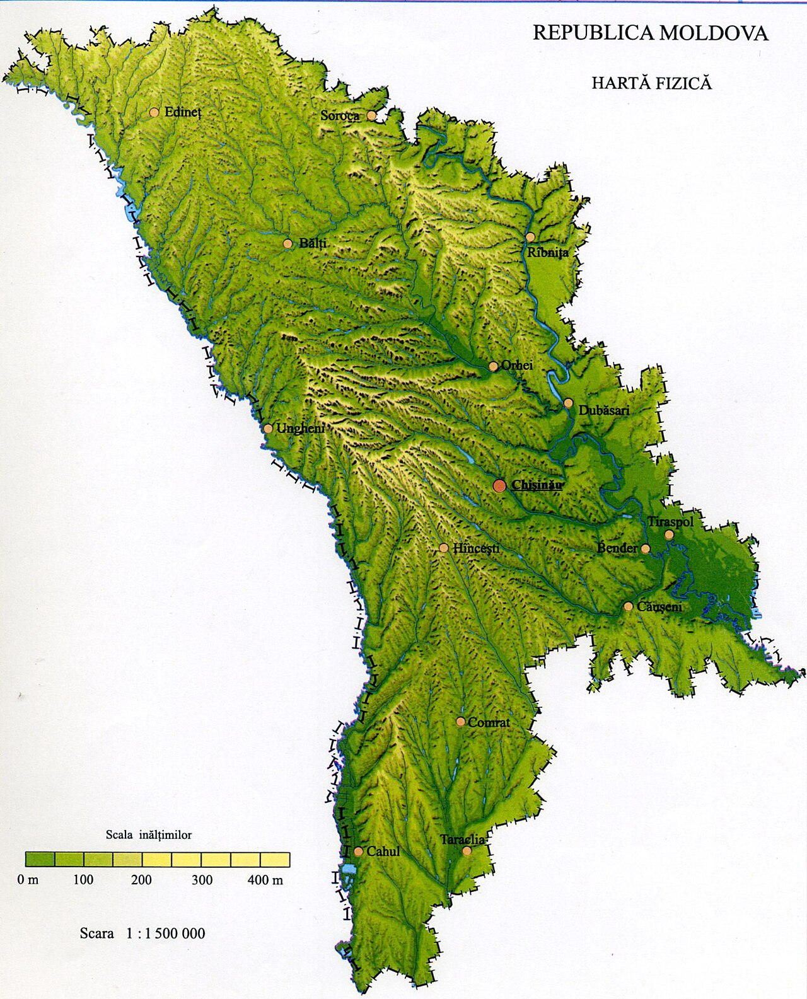

Explorează, construiește, verifică și interpretează hărțile Republicii Moldova.
```
Descoperă spațiul geografic al Republicii Moldova.
```Completează și explorează hărți geografice.
Rezolvă provocări și descoperă Moldova.
Analizează, verifică și reflectează asupra propriului proces de învățare.
Urmărește rezultatele și dezvoltarea competențelor.
Analizează harta fizică și fă clic în locul în care crezi că se află punctul extrem de nord.
Ce te-a ajutat să localizezi punctele extreme?